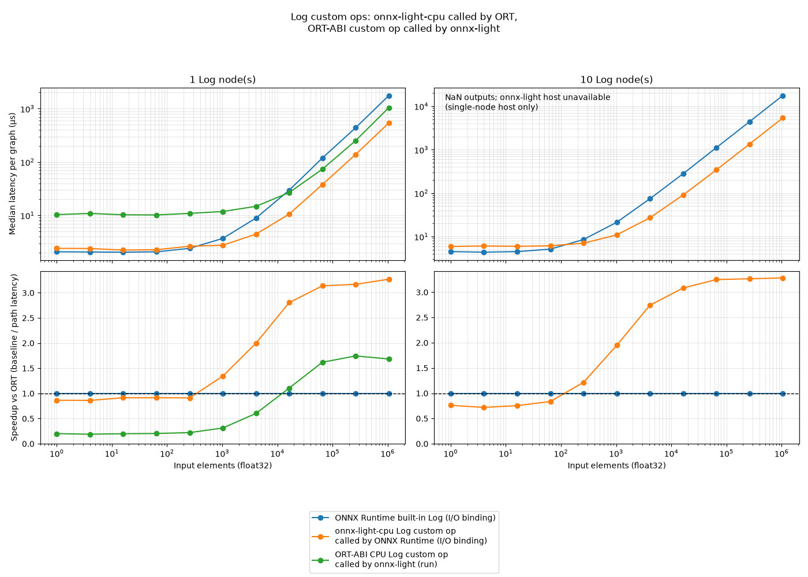

Note
Go to the end to download the full example code.
Benchmark Log custom ops: onnx-light and ORT callers#
Compare ORT’s built-in Log with onnx-light-cpu’s Log custom operator
called by ORT, and the same ORT-ABI custom operator called by onnx-light’s
standalone host. These are custom operators, not execution providers.
Two graph topologies are used: X -> Log -> Y and
X -> Log -> ... -> Log -> Y with ten consecutive nodes. Both use float32,
dynamic one-dimensional inputs and models built with onnx_light.onnx.
ORT executes each topology with either standard-domain or custom-domain nodes,
using only run_with_iobinding with preallocated input and output buffers.
The standalone onnx-light custom-op host exposes only run and accepts only
one node. Its ten-node result is therefore unavailable, not ten Python calls
misrepresented as a graph. ORT’s built-in Log with I/O binding is the baseline:
speedup is its median latency divided by the measured path’s median latency.
NumPy is used only for input preparation and correctness checks, not timed.
Repeated real-valued logarithms inevitably leave the positive domain in float32. The ten-node graph produces NaNs: this is a literal Log chain, not a benchmark of ten finite-input logarithms. Every path is checked against a NumPy reference, including matching NaNs, before and after timing.
import argparse
from functools import partial
import inspect
import json
import os
from pathlib import Path
import platform
import statistics
import subprocess
import sys
import time
import numpy
from onnx_light.onnx import TensorProto, checker, helper
SIZES = [4**power for power in range(11)]
LABELS = {
"ort": "ONNX Runtime built-in Log (I/O binding)",
"custom": "onnx-light-cpu Log custom op called by ONNX Runtime (I/O binding)",
"standalone": "ORT-ABI CPU Log custom op called by onnx-light (run)",
}
Construct both graph topologies here, so the downloaded gallery example contains the complete benchmark, including its isolated worker.
def make_model(custom, nodes=1):
domain = "onnx_light_cpu" if custom else ""
names = ["X", *(f"log_{index}" for index in range(1, nodes)), "Y"]
model = helper.make_model(
helper.make_graph(
[
helper.make_node("Log", [names[index]], [names[index + 1]], domain=domain)
for index in range(nodes)
],
"log-custom-op-benchmark",
[helper.make_tensor_value_info("X", TensorProto.FLOAT, ["N"])],
[helper.make_tensor_value_info("Y", TensorProto.FLOAT, ["N"])],
),
opset_imports=[helper.make_opsetid(domain, 1 if custom else 18)],
ir_version=9,
)
checker.check_model(model)
return model.SerializeToString()
Prepare reusable inputs and outputs before timing ORT’s I/O binding interface. Import ORT only inside these functions: standalone workers must not load it.
def ort_runner(session, values):
"""Prepares reusable inputs and outputs outside the measured region."""
import onnxruntime
input_value = onnxruntime.OrtValue.ortvalue_from_numpy(values)
output = numpy.empty_like(values)
output_value = onnxruntime.OrtValue.ortvalue_from_numpy(output)
binding = session.io_binding()
binding.bind_ortvalue_input("X", input_value)
binding.bind_ortvalue_output("Y", output_value)
return lambda: session.run_with_iobinding(binding), lambda result: output
Check each path against NumPy before and after collecting its timing samples.
def measure(args):
if args.backend not in LABELS:
raise ValueError(f"Unsupported backend: {args.backend}")
if args.backend == "standalone" and args.nodes != 1:
raise ValueError("The standalone host supports only one node")
custom = args.backend != "ort"
if args.backend == "standalone":
from onnx_light_ort import CustomOpSessionOrtCalledByLight
session = CustomOpSessionOrtCalledByLight(
make_model(custom, args.nodes), library=args.library, host_library=args.host
)
version = None
else:
import onnxruntime
options = onnxruntime.SessionOptions()
options.intra_op_num_threads = 1
options.inter_op_num_threads = 1
options.execution_mode = onnxruntime.ExecutionMode.ORT_SEQUENTIAL
if custom:
options.register_custom_ops_library(str(args.library))
session = onnxruntime.InferenceSession(
make_model(custom, args.nodes), options, providers=["CPUExecutionProvider"]
)
version = onnxruntime.__version__
rng = numpy.random.default_rng(42)
rows = []
for size in args.sizes:
values = rng.uniform(0.01, 10, size).astype(numpy.float32)
feeds = {"X": values}
if args.backend == "standalone":
run, get_output = partial(session.run, None, feeds), lambda result: result[0]
else:
run, get_output = ort_runner(session, values)
# Repeated real-valued logarithms eventually leave the positive domain.
with numpy.errstate(divide="ignore", invalid="ignore"):
expected = values.copy()
for _ in range(args.nodes):
expected = numpy.log(expected.astype(numpy.float64)).astype(numpy.float32)
for _ in range(args.warmup):
run()
numpy.testing.assert_allclose(
get_output(run()), expected, rtol=2e-6, atol=0, equal_nan=True
)
samples = []
for _ in range(args.repeat):
begin = time.perf_counter()
for _ in range(args.number):
run()
samples.append((time.perf_counter() - begin) / args.number)
numpy.testing.assert_allclose(
get_output(run()), expected, rtol=2e-6, atol=0, equal_nan=True
)
rows.append({"size": size, "samples_s": samples})
if args.backend == "standalone":
session.close()
assert "onnxruntime" not in sys.modules
assert "onnx" not in sys.modules
return {
"backend": args.backend,
"api": "run" if args.backend == "standalone" else "iobinding",
"nodes": args.nodes,
"ort_version": version,
"rows": rows,
}
The command-line entry point also serves isolated measurement workers.
def main():
parser = argparse.ArgumentParser(description=__doc__)
parser.add_argument("--library", type=Path, required=True)
parser.add_argument("--host", type=Path, required=True)
parser.add_argument("--sizes", type=int, nargs="+", default=SIZES)
parser.add_argument("--warmup", type=int, default=10)
parser.add_argument("--repeat", type=int, default=31)
parser.add_argument("--number", type=int, default=20)
parser.add_argument("--trials", type=int, default=3)
parser.add_argument("--nodes", type=int, choices=[1, 10], default=1)
parser.add_argument("--output", type=Path)
parser.add_argument("--backend", choices=list(LABELS), help=argparse.SUPPRESS)
args = parser.parse_args()
if min(args.sizes) <= 0 or max(args.sizes) > 16 * 1024 * 1024:
parser.error("sizes must be positive and fit the host's 64 MiB tensor limit")
if min(args.repeat, args.number, args.trials) <= 0 or args.warmup < 0:
parser.error("repeat, number and trials must be positive; warmup must be nonnegative")
args.library = args.library.resolve(strict=True)
args.host = args.host.resolve(strict=True)
if args.backend:
print(json.dumps(measure(args)))
return
backends = ["ort", "custom"]
if args.nodes == 1:
backends.append("standalone")
results = []
for trial in range(args.trials):
offset = trial % len(backends)
for backend in backends[offset:] + backends[:offset]:
command = [
sys.executable,
str(Path(inspect.getsourcefile(main)).resolve()),
"--library",
str(args.library),
"--host",
str(args.host),
"--sizes",
*(str(size) for size in args.sizes),
"--warmup",
str(args.warmup),
"--repeat",
str(args.repeat),
"--number",
str(args.number),
"--backend",
backend,
"--nodes",
str(args.nodes),
]
completed = subprocess.run(command, check=True, stdout=subprocess.PIPE, text=True)
results.append(json.loads(completed.stdout))
report = {
"measurement": "steady-state ORT I/O binding / standalone run, including Python",
"baseline": LABELS["ort"],
"speedup": "median ORT built-in Log latency / median path latency",
"labels": LABELS,
"nodes": args.nodes,
"threads": 1,
"operator": "Log",
"dtype": "float32",
"input_distribution": "uniform(0.01, 10), NumPy default_rng seed 42",
"platform": platform.platform(),
"affinity": sorted(os.sched_getaffinity(0)) if hasattr(os, "sched_getaffinity") else None,
"python": platform.python_version(),
"warmup": args.warmup,
"repeat": args.repeat,
"number": args.number,
"trials": args.trials,
"results": results,
}
if args.output:
args.output.write_text(json.dumps(report, indent=2) + "\n", encoding="utf-8")
summary = summarize(results)
print(f"Baseline: {LABELS['ort']}; speedup = baseline latency / path latency.")
print("| Elements | Path | Median (us) | Speedup vs ORT |")
print("| ---: | --- | ---: | ---: |")
for backend in backends:
for row in summary[(args.nodes, backend)]:
print(
f"| {row['size']:,} | {LABELS[backend]} | {row['median_s'] * 1e6:.3f} "
f"| {row['speedup']:.2f}x |"
)
if args.nodes != 1:
print(f"{LABELS['standalone']}: unavailable (single-node host).")
print(
"Raw samples, when --output is supplied, include all trials; "
"standalone timings include protective input and output copies."
)
Each measurement runs in a fresh process so the standalone host never imports or loads ORT. Library paths are explicit, just like the other gallery examples. Sessions, random inputs (seed 42), OrtValues, bindings and preallocated outputs are prepared outside timing. ORT uses one thread and sequential execution. Each path gets three warmups and five batches of ten calls; report the median time per whole graph, not per node. Correctness checks and output conversion to NumPy are excluded from timing.
ORT I/O binding reuses preallocated output buffers. The standalone wrapper includes protective input and output copies. These are end-to-end Python interface timings, not isolated kernel timings or universal speedups.
def run_gallery():
benchmark = Path(inspect.getsourcefile(run_gallery)).resolve()
root = benchmark.parents[2]
environment = os.environ.copy()
environment["PYTHONPATH"] = os.pathsep.join([str(root), os.environ.get("PYTHONPATH", "")])
launcher = [sys.executable]
if sys.platform == "win32":
launcher.append(str(root / "cmake/run_python_with_dll_paths.py"))
library = Path(os.environ["ONNX_LIGHT_ORT_PLUGIN_LIBRARY"]).resolve(strict=True)
host = Path(os.environ["ONNX_LIGHT_ORT_HOST_LIBRARY"]).resolve(strict=True)
sizes = SIZES
print(f"Python {platform.python_version()}, {platform.platform()}")
results = []
for nodes in (1, 10):
print(f"\n{nodes} Log node(s), median microseconds per graph")
for backend, label in LABELS.items():
if backend == "standalone" and nodes != 1:
print(f"{label}: unavailable (single-node host)")
continue
command = [
*launcher,
str(benchmark),
"--library",
str(library),
"--host",
str(host),
"--sizes",
*(str(size) for size in sizes),
"--nodes",
str(nodes),
"--backend",
backend,
"--warmup",
"3",
"--repeat",
"5",
"--number",
"10",
]
completed = subprocess.run(
command, check=True, stdout=subprocess.PIPE, text=True, env=environment
)
result = json.loads(completed.stdout)
results.append(result)
print(f"{'Elements':>10} {'Median (us)':>12} {'Speedup vs ORT':>14} Path")
for (topology, backend), rows in summarize(results).items():
if topology == nodes:
for row in rows:
print(
f"{row['size']:>10,} {row['median_s'] * 1e6:>12.3f} "
f"{row['speedup']:>13.2f}x {LABELS[backend]}"
)
ort_version = next(result["ort_version"] for result in results if result["backend"] == "ort")
print(f"\nONNX Runtime {ort_version}; onnx-light model bindings; float32 CPU")
print(f"Speedup baseline: {LABELS['ort']}; values above 1 mean faster than ORT.")
assert "onnx" not in sys.modules
return results
def summarize(results):
"""Pool trials and compare each path to ORT at the same size and node count."""
samples = {}
for result in results:
rows = samples.setdefault((result["nodes"], result["backend"]), {})
for row in result["rows"]:
rows.setdefault(row["size"], []).extend(row["samples_s"])
medians = {
key: {size: statistics.median(values) for size, values in rows.items()}
for key, rows in samples.items()
}
return {
(nodes, backend): [
{
"size": size,
"median_s": median,
"speedup": medians[(nodes, "ort")][size] / median,
}
for size, median in sorted(rows.items())
]
for (nodes, backend), rows in medians.items()
}
def plot_results(results):
"""Separate latency and ORT-relative speedups for each graph topology."""
import matplotlib.pyplot as plt
summary = summarize(results)
fig, axes = plt.subplots(2, 2, figsize=(14, 10), sharex=True)
for column, nodes in enumerate((1, 10)):
latency, speedup = axes[:, column]
for index, (backend, label) in enumerate(LABELS.items()):
rows = summary.get((nodes, backend))
if rows is None:
continue
sizes = [row["size"] for row in rows]
style = {"marker": "o", "color": f"C{index}"}
latency.plot(
sizes,
[row["median_s"] * 1e6 for row in rows],
label=label.replace(" called by ", "\ncalled by "),
**style,
)
speedup.plot(sizes, [row["speedup"] for row in rows], **style)
latency.set(title=f"{nodes} Log node(s)", yscale="log")
speedup.axhline(1, color="black", linestyle="--", linewidth=1)
speedup.set(xlabel="Input elements (float32)", ylim=(0, None))
for ax in (latency, speedup):
ax.set_xscale("log")
ax.grid(True, which="both", alpha=0.3)
axes[0, 0].set_ylabel("Median latency per graph (µs)")
axes[1, 0].set_ylabel("Speedup vs ORT (baseline / path latency)")
axes[0, 1].text(
0.03,
0.97,
"NaN outputs; onnx-light host unavailable\n(single-node host only)",
transform=axes[0, 1].transAxes,
va="top",
)
fig.suptitle(
"Log custom ops: onnx-light-cpu called by ORT,\nORT-ABI custom op called by onnx-light"
)
fig.legend(*axes[0, 0].get_legend_handles_labels(), loc="lower center", fontsize=10)
fig.tight_layout(rect=(0, 0.17, 1, 0.94))
return fig
The full samples remain available in results. No performance thresholds
are asserted: CPU, SIMD dispatch and ORT version affect these measurements.
if __name__ == "__main__":
if "__file__" in globals() and len(sys.argv) > 1:
main()
else:
results = run_gallery()
# %%
# Compare whole-graph latency and speedup relative to ORT's built-in Log.
import matplotlib.pyplot as plt
fig = plot_results(results)
plt.show()

Python 3.12.15, Linux-6.17.0-1022-azure-x86_64-with-glibc2.39
1 Log node(s), median microseconds per graph
Elements Median (us) Speedup vs ORT Path
1 2.078 1.00x ONNX Runtime built-in Log (I/O binding)
4 2.058 1.00x ONNX Runtime built-in Log (I/O binding)
16 2.041 1.00x ONNX Runtime built-in Log (I/O binding)
64 2.074 1.00x ONNX Runtime built-in Log (I/O binding)
256 2.405 1.00x ONNX Runtime built-in Log (I/O binding)
1,024 3.696 1.00x ONNX Runtime built-in Log (I/O binding)
4,096 8.893 1.00x ONNX Runtime built-in Log (I/O binding)
16,384 29.630 1.00x ONNX Runtime built-in Log (I/O binding)
65,536 118.889 1.00x ONNX Runtime built-in Log (I/O binding)
262,144 438.610 1.00x ONNX Runtime built-in Log (I/O binding)
1,048,576 1759.402 1.00x ONNX Runtime built-in Log (I/O binding)
1 2.405 0.86x onnx-light-cpu Log custom op called by ONNX Runtime (I/O binding)
4 2.390 0.86x onnx-light-cpu Log custom op called by ONNX Runtime (I/O binding)
16 2.233 0.91x onnx-light-cpu Log custom op called by ONNX Runtime (I/O binding)
64 2.268 0.91x onnx-light-cpu Log custom op called by ONNX Runtime (I/O binding)
256 2.637 0.91x onnx-light-cpu Log custom op called by ONNX Runtime (I/O binding)
1,024 2.752 1.34x onnx-light-cpu Log custom op called by ONNX Runtime (I/O binding)
4,096 4.449 2.00x onnx-light-cpu Log custom op called by ONNX Runtime (I/O binding)
16,384 10.562 2.81x onnx-light-cpu Log custom op called by ONNX Runtime (I/O binding)
65,536 37.876 3.14x onnx-light-cpu Log custom op called by ONNX Runtime (I/O binding)
262,144 138.432 3.17x onnx-light-cpu Log custom op called by ONNX Runtime (I/O binding)
1,048,576 538.018 3.27x onnx-light-cpu Log custom op called by ONNX Runtime (I/O binding)
1 10.328 0.20x ORT-ABI CPU Log custom op called by onnx-light (run)
4 10.855 0.19x ORT-ABI CPU Log custom op called by onnx-light (run)
16 10.251 0.20x ORT-ABI CPU Log custom op called by onnx-light (run)
64 10.166 0.20x ORT-ABI CPU Log custom op called by onnx-light (run)
256 10.880 0.22x ORT-ABI CPU Log custom op called by onnx-light (run)
1,024 11.806 0.31x ORT-ABI CPU Log custom op called by onnx-light (run)
4,096 14.751 0.60x ORT-ABI CPU Log custom op called by onnx-light (run)
16,384 26.776 1.11x ORT-ABI CPU Log custom op called by onnx-light (run)
65,536 73.404 1.62x ORT-ABI CPU Log custom op called by onnx-light (run)
262,144 251.359 1.74x ORT-ABI CPU Log custom op called by onnx-light (run)
1,048,576 1044.026 1.69x ORT-ABI CPU Log custom op called by onnx-light (run)
10 Log node(s), median microseconds per graph
ORT-ABI CPU Log custom op called by onnx-light (run): unavailable (single-node host)
Elements Median (us) Speedup vs ORT Path
1 4.514 1.00x ONNX Runtime built-in Log (I/O binding)
4 4.383 1.00x ONNX Runtime built-in Log (I/O binding)
16 4.514 1.00x ONNX Runtime built-in Log (I/O binding)
64 5.147 1.00x ONNX Runtime built-in Log (I/O binding)
256 8.560 1.00x ONNX Runtime built-in Log (I/O binding)
1,024 21.335 1.00x ONNX Runtime built-in Log (I/O binding)
4,096 74.262 1.00x ONNX Runtime built-in Log (I/O binding)
16,384 279.294 1.00x ONNX Runtime built-in Log (I/O binding)
65,536 1111.913 1.00x ONNX Runtime built-in Log (I/O binding)
262,144 4400.804 1.00x ONNX Runtime built-in Log (I/O binding)
1,048,576 17567.459 1.00x ONNX Runtime built-in Log (I/O binding)
1 5.929 0.76x onnx-light-cpu Log custom op called by ONNX Runtime (I/O binding)
4 6.092 0.72x onnx-light-cpu Log custom op called by ONNX Runtime (I/O binding)
16 5.984 0.75x onnx-light-cpu Log custom op called by ONNX Runtime (I/O binding)
64 6.148 0.84x onnx-light-cpu Log custom op called by ONNX Runtime (I/O binding)
256 7.047 1.21x onnx-light-cpu Log custom op called by ONNX Runtime (I/O binding)
1,024 10.947 1.95x onnx-light-cpu Log custom op called by ONNX Runtime (I/O binding)
4,096 27.076 2.74x onnx-light-cpu Log custom op called by ONNX Runtime (I/O binding)
16,384 90.578 3.08x onnx-light-cpu Log custom op called by ONNX Runtime (I/O binding)
65,536 342.002 3.25x onnx-light-cpu Log custom op called by ONNX Runtime (I/O binding)
262,144 1347.276 3.27x onnx-light-cpu Log custom op called by ONNX Runtime (I/O binding)
1,048,576 5350.866 3.28x onnx-light-cpu Log custom op called by ONNX Runtime (I/O binding)
ONNX Runtime 1.31.0; onnx-light model bindings; float32 CPU
Speedup baseline: ONNX Runtime built-in Log (I/O binding); values above 1 mean faster than ORT.
Total running time of the script: (0 minutes 4.078 seconds)